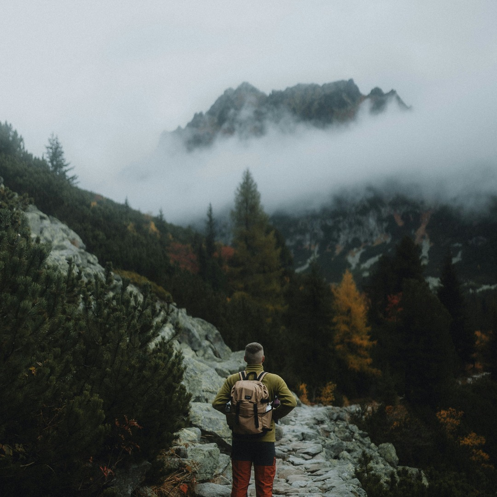
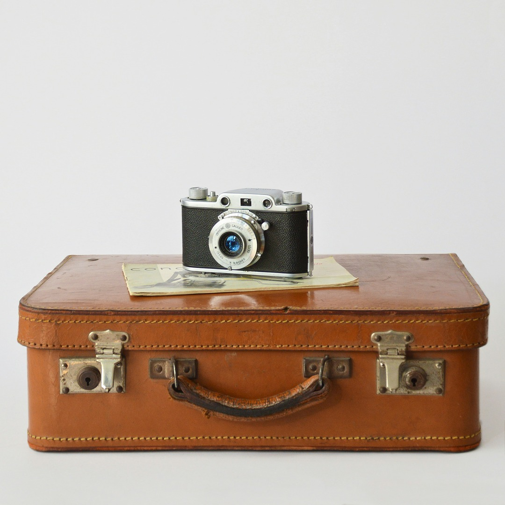

Top 5 rzeczy w góry
Strona testowa: to strona docelowa reklamy testowej JohnDoe, przygotowanej w ramach testu Marketing API Mety. JohnDoe nie jest sklepem, niczego nie sprzedaje i nie ma umów z wymienionymi sklepami. Ceny są orientacyjne i mogą się różnić w zależności od rozmiaru, koloru i promocji; aktualna cena jest zawsze w sklepie.


-
Buty turystyczne z membraną
Najważniejsza rzecz na szlaku: wodoodporne buty z dobrą podeszwą chronią przed poślizgnięciem i przemoczeniem. Warto je rozchodzić przed wyjazdem.
Przykład: buty turystyczne męskie Quechua MH500 wodoodporne, ok. 290 zł, Decathlon.pl
-
Kurtka przeciwdeszczowa
Pogoda w górach zmienia się szybko. Lekka kurtka z membraną i wentylacją chroni przed deszczem i wiatrem, a po złożeniu mieści się w plecaku.
Przykład: kurtka turystyczna męska Quechua MH500 wodoodporna, ok. 400 zł, Decathlon.pl
-
Plecak 25–30 litrów
Na jednodniową wycieczkę wystarcza plecak 25–30 l z wentylowanymi plecami i pokrowcem przeciwdeszczowym: mieści kurtkę, wodę, jedzenie i apteczkę.
Przykład: plecak turystyczny Quechua MH500 30 l, ok. 250 zł, Decathlon.pl
-
Kijki trekkingowe
Odciążają kolana przy zejściach i pomagają utrzymać równowagę na kamieniach. Regulowana długość pozwala dopasować je do wzrostu i terenu.
Przykład: kijek turystyczny Forclaz MT500, ok. 80 zł za sztukę (para ok. 160 zł), Decathlon.pl
-
Czołówka
Na wypadek, gdyby zejście się przeciągnęło po zmroku. Czołówka zostawia wolne ręce, a wersja z akumulatorem USB nie wymaga zapasowych baterii.
Przykład: lampa czołowa Simond HL500 USB V3 (300 lm), ok. 130 zł, Decathlon.pl
Więcej o aplikacji JohnDoe: strona główna.
Top 5 things for the mountains
Test page: this is the landing page of a JohnDoe test ad, created as part of a Meta Marketing API test. JohnDoe is not a shop, sells nothing and has no agreements with the shops listed. Prices are approximate and may vary by size, colour and promotions; the current price is always in the shop.
Waterproof hiking boots
Quechua MH500 waterproof, approx. 290 PLN, Decathlon.pl (link above).
Rain jacket
Quechua MH500 waterproof jacket, approx. 400 PLN.
25–30 litre backpack
Quechua MH500 30 l, approx. 250 PLN.
Trekking poles
Forclaz MT500, approx. 80 PLN each.
Headlamp
Simond HL500 USB V3, approx. 130 PLN.